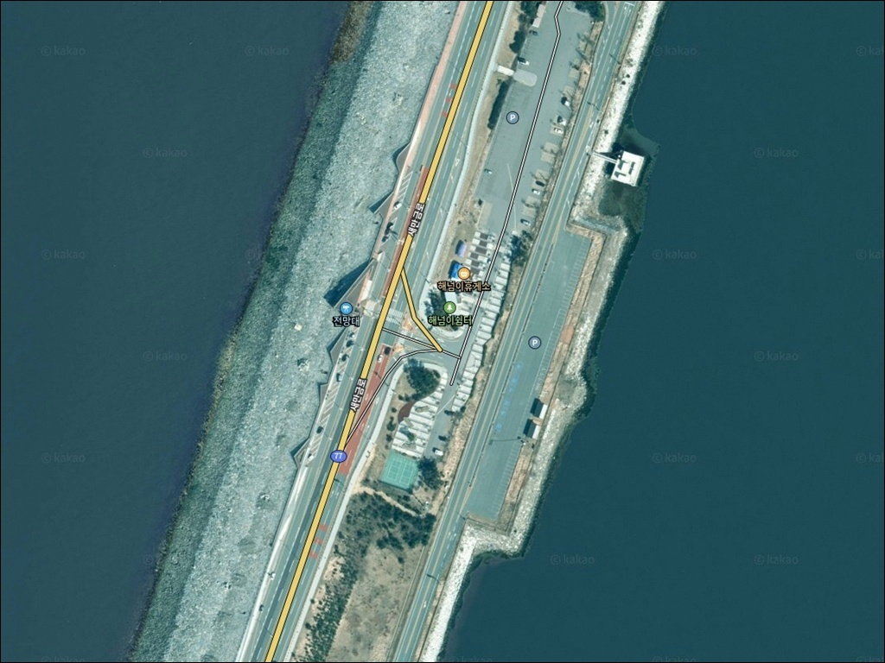
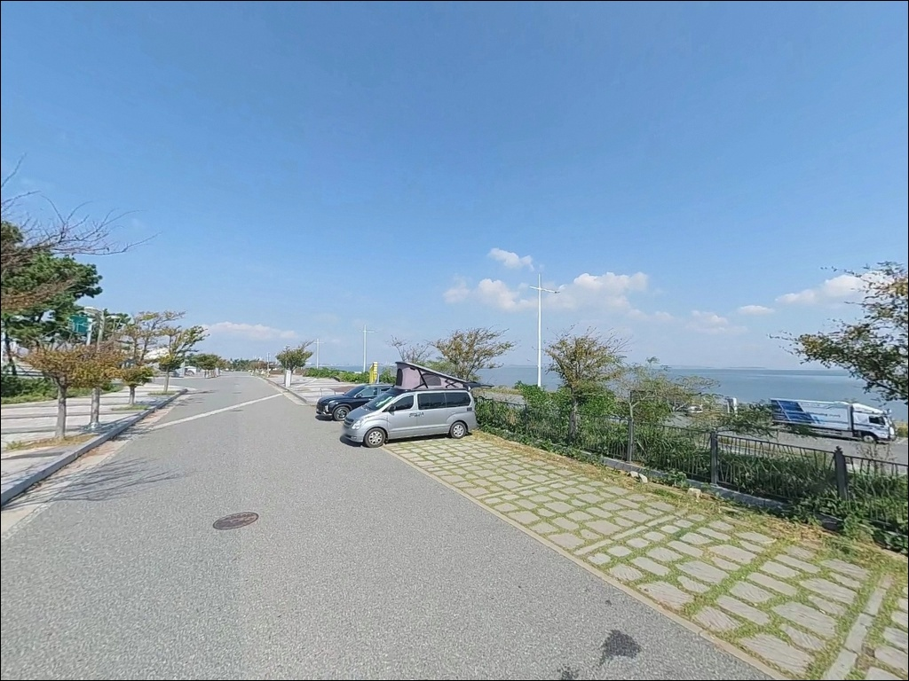
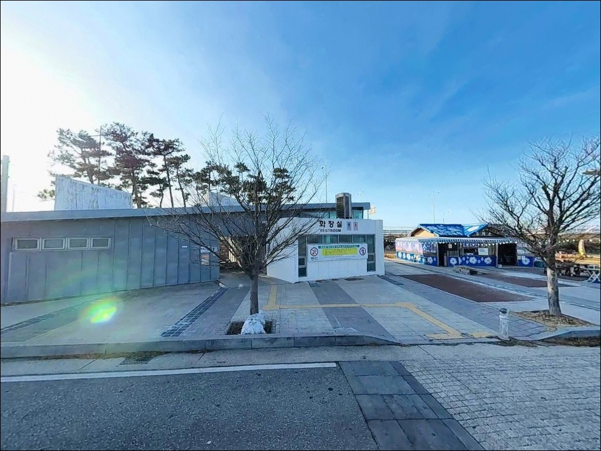
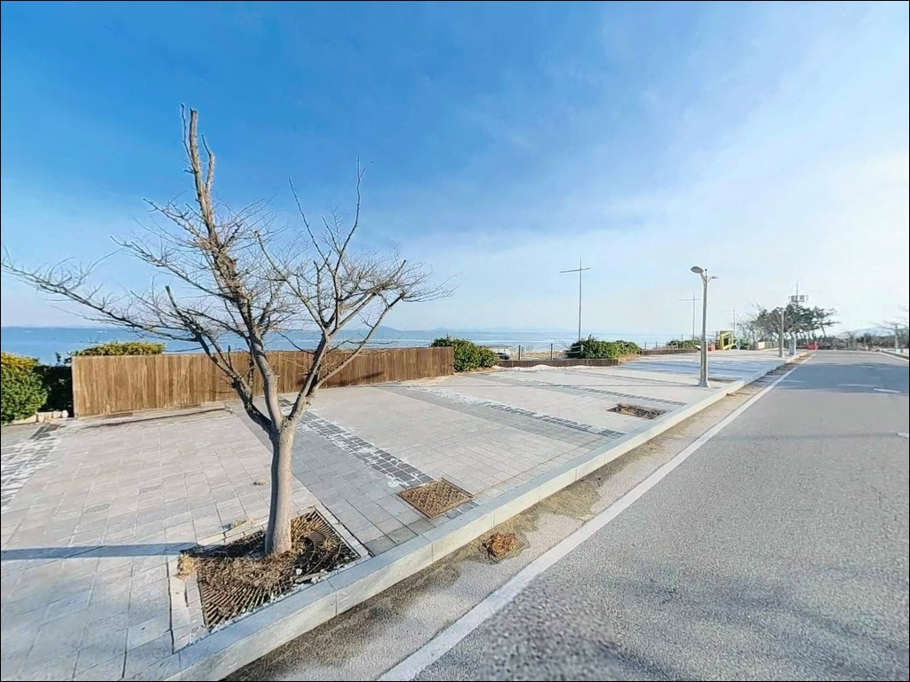
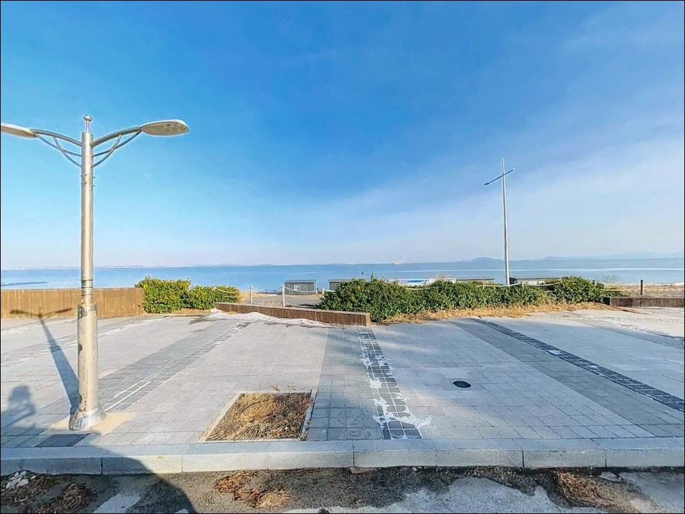
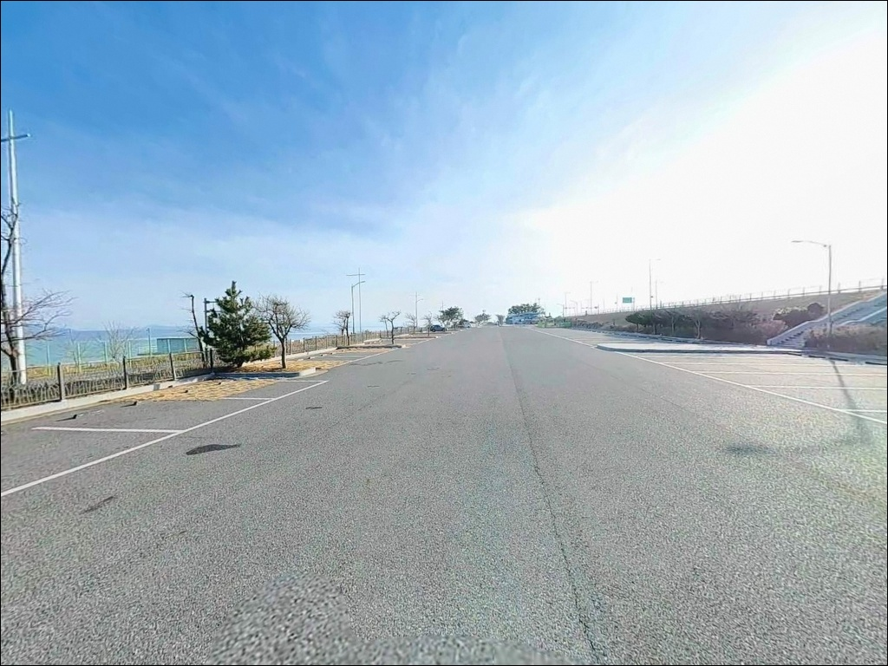
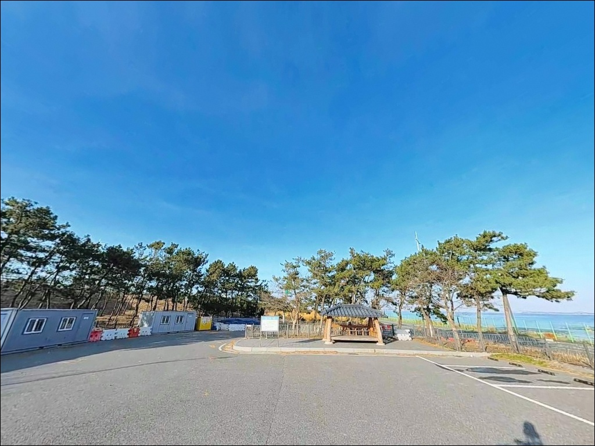
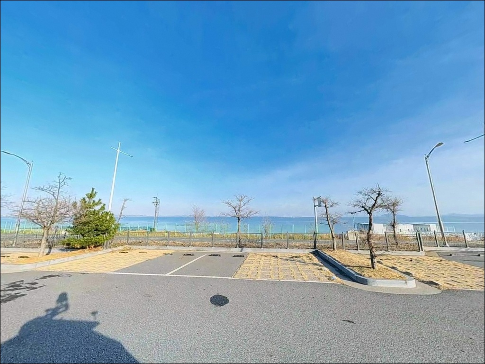
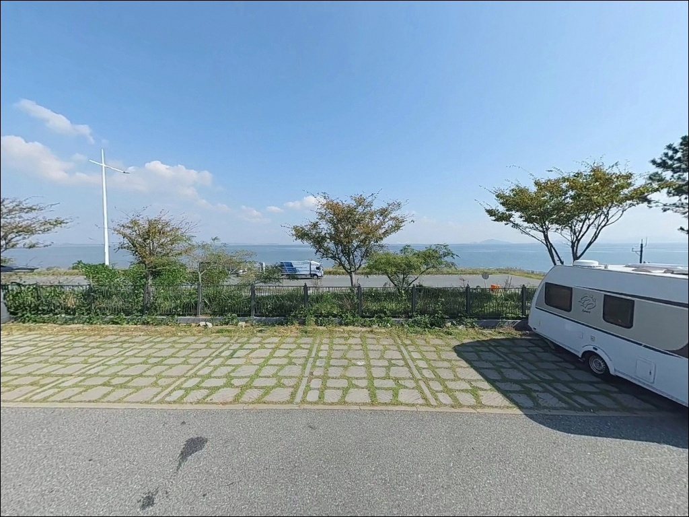

해넘이휴게소, 전북 군산시 바다와 가장 가까이 머무는 차박, 낚시 해안 명소
이 페이지에는 광고(제휴 링크 포함)가 있으며, 광고 링크를 통해 구매하면 운영자가 판매 수익 또는 수수료를 받을 수 있습니다. 포인트 사진: 카카오맵 스카이뷰·로드뷰. 이 페이지의 지도·사진 이미지는 카카오맵의 실제 서비스 이미지와 다를 수 있습니다.


해넘이휴게소
전북 군산시 비응도동 129-1
방조제 낚시에서 물때를 확인하지 않고 입장하면
조류가 강해지는 시간대와 겹쳐
채비 컨트롤 자체가 어려워집니다.
해넘이휴게소는 서해 방향으로 완전히 열린
직선 석축 구조라,
조류와 바람이 동시에 강해지면
어떤 방식으로도 원하는 자리에서 버티기 어렵습니다.
이 글은 해넘이휴게소의 지형 구조,
낚시 방식별 운용 조건,
진입과 차박 여건에 집중합니다.
조황 단정과 특정 어종 보장은
이 글의 범위에 포함되지 않습니다.

1. 진입 동선과 방조제 접근 구조
해넘이휴게소는 새만금방조제를 가로지르는
새만금로(국도 77호선)에서 직접 진입하는 구조입니다.
포장된 방조제 도로라 경사와 협로 문제가 없으며,
승용차부터 캠핑카·카라반까지
진입 자체에 무리가 없는 편입니다.
주차장은 휴게소 본 주차구역을 중심으로
규모가 넉넉합니다.
카라반이 다수 주차하는 수준으로
공간이 확보되어 있으며,
회차도 주차장 내에서 충분히 가능합니다.
낚시 자리는 주차장에서 석축 방향으로
내려가는 구조입니다.
석축 발판은 젖은 상태에서 미끄러운 편이라
미끄럼 방지 안전화는 기본 착용 조건입니다.
방조제 도로와 낚시 동선이 가까워
차량 통행에 주의해야 하는 구조이기도 합니다.

2. 차박 환경과 야간 체류 여건
넓은 포장 주차장 덕분에 차박 차량이 자주 찾는 포인트입니다.
화장실과 매점이 갖춰져 있어
기본 편의 조건은 방조제 포인트 중
상위권 수준입니다.
주말과 성수기에는 차박 차량과 관광객이 몰려
개방형 공간 특유의 번잡한 분위기가 형성됩니다.
방조제 외해 노출 구조상 바람은 항상 변수입니다.
야간에는 체감 기온이 크게 떨어지고,
기상에 따라 너울 영향도 받는 구조입니다.
방풍 준비와 침낭 보온 등급은
계절에 맞게 갖추는 편이 좋습니다.
민가가 없는 방조제 위 구조라
야간 주변 통행은 제한적이고,
가로등은 휴게소 주변 일부 구간에만 존재합니다.
석축 낚시 구간까지는 빛이 닿지 않는 편이라
개인 헤드랜턴은 야간 필수 장비입니다.


3. 주변 편의시설과 인프라 현황
해넘이휴게소 자체에는 화장실과 매점이 있습니다.
매점은 주간 운영 기준으로
간단한 먹거리와 음료 구매가 가능합니다.
야간 입장을 계획한다면
식수와 식품은 출발 전에 준비하는 것이
현실적인 방법입니다.
방조제에서 차량으로 3km 내 권역에
비응항이 자리합니다.
비응항 회타운에는 횟집이 다수 밀집해 있고,
수산물시장에서 선어·활어·건어물 구매가 가능합니다.
채비 보충이 필요하다면
비응항 군산낚시터미널(비응로 6)이
가장 가까운 낚시 전문 인프라입니다.

4. 출조 전 반드시 챙겨야 할 준비사항
가장 먼저 확인할 것은 물때와 기상입니다.
서해 방조제는 조수 간만의 차가 크고
사리 전후에는 조류가 급격히 세집니다.
바다타임에서 군산 기준 물때를 확인하고
조금 전후 시간대를 중심으로
입장 타이밍을 맞추는 것이 기본 전략입니다.
방조제 구조상 기상 변화에 민감합니다.
출발 당일 아침 기상청 풍속 예보를
다시 한번 확인하는 것이 좋습니다.
강풍 주의보가 발령된 날이라면
석축 진입 자체를 자제하는 편이 안전합니다.
석축 지형 특성상 채비 손실이 잦은 편입니다.
루어와 원투 채비 모두 여분을 넉넉하게 준비하고,
구명조끼 착용은 해양경찰청 권고 기준에 따른
기본 안전 조건입니다.
방조제 도로에서 차량 통행이 이어지는 구조라
낚시 동선과 차량 통행 구역의 분리도
입장 전 확인해야 할 항목입니다.

5. 외해 석축에서 낚시 자리가 달라지는 조건
해넘이휴게소 방조제는
외해(서해 방향)와 내측(새만금호)으로
면이 구분되는 구조입니다.
외해 방향 석축은 서해 조류를 직접 받아
수심 5m 전후로 유지되며,
조류 소통이 원활한 외해 석축이
루어와 원투낚시 모두의 메인 자리입니다.
방조제 건설 당시 수중에 큰 돌을
다량 투입한 구조로,
석축 발판 아래에는 돌무더기 지형이
광범위하게 형성되어 있습니다.
이 구조는 우럭이 서식하기 좋은 환경이며,
석축 경계와 돌무더기 사이가
루어 공략의 핵심 구간입니다.
내측(새만금호) 방향은 조류 영향이 약한
정체성 수역으로 수면이 잔잔한 편입니다.
급격한 수심 변화는 적지만
라이트 루어로 소형 어종을
탐색하는 스타일에 어울리는 구조입니다.
출조 전 최신 조황은
"새만금방조제 낚시 조황" 또는 "비응항 조황"으로
직접 검색해서 확인하시기 바랍니다.


6. 방조제 지형에 어울리는 낚시 스타일
이 포인트에서 가장 잘 어울리는 방식은 루어낚시입니다.
우럭을 노리는 지그헤드 웜 채비가
석축 돌무더기 구간과 잘 맞고,
농어는 미노우 계열 루어에
반응하는 지형 조건을 갖추고 있습니다.
직선 방조제 구조 특성상
이동하면서 넓게 탐색하는 워킹 스타일이
효율적인 방식입니다.
가을 시즌에는 삼치와 풀치를 대상으로 한
스푼·메탈지그 캐스팅이 활발합니다.
외해 방향으로 최대한 멀리 던진 뒤
빠르게 감아들이는 방식이 기본이며,
외해 조류가 살아있는 시간대에
집중하는 것이 유효합니다.
원투낚시는 바닥층 어종을 노리는 데
가장 무난한 방식입니다.
수심이 완만한 석축 앞단 구조라
외해 방향 원거리 캐스팅 후
바닥 탐색에 집중하는 방식이 어울립니다.
계절에 따라 주꾸미와 갑오징어를 대상으로
에깅도 병행 운용이 가능합니다.

7. 대안 포인트와 플랜 B 동선
해넘이휴게소 조류가 너무 강하거나
주차 공간이 여의치 않을 때
가장 가까운 대안은
비응항 방파제입니다.
1~2km 거리로 이동 부담이 적고,
내항·외항 구분이 명확해
방파제 끝 포인트 집중 공략이 가능합니다.
방조제를 따라 더 안쪽으로 이동하면
돌고래쉼터 구간이 있습니다.
해넘이휴게소와 지형 구조가 유사하며
주차 여건도 비슷한 수준입니다.
방문자가 적은 평일이라면
더 조용한 분위기에서 낚시할 수 있는
대안입니다.
10km권에는 야미도 선착장이 있습니다.
구조물이 다양하고 포인트 변화가 있어
방조제 직선 구간에 반응이 없을 때
이동 대안으로 활용하기 좋습니다.
선상 출조를 고려한다면
비응항 군산낚시터미널(비응로 6)이
차량 10분 이내 거리에 있습니다.

서해 방조제 구조를 읽으면
해넘이휴게소가 달라 보입니다
루어낚시나 원투낚시를 즐기는 낚시인이라면
해넘이휴게소의 직선 석축 구조는
이동형 탐색 스타일에 잘 맞는 지형입니다.
특히 가을 시즌 삼치·풀치 루어 타이밍을
외해 조류가 살아있는 시간대와 맞출 수 있다면
기대해볼 만한 방문이 됩니다.
반면 접근이 쉽다는 이유만으로
물때와 풍향 확인 없이 찾아가면
낚시 여건이 전혀 다른 현장을
맞닥뜨리게 됩니다.
서해 방조제는 물때와 바람이 동시에
낚시 조건을 결정하는 구조이기 때문입니다.
넓은 주차장에서 서해 노을을 바라보며
하룻밤 머무는 차박을 낚시와 함께 즐기려는 분이라면,
물때·바람·채비 준비 이 세 가지를 갖추고 간다면
만족도 높은 출조가 될 수 있는 포인트입니다.